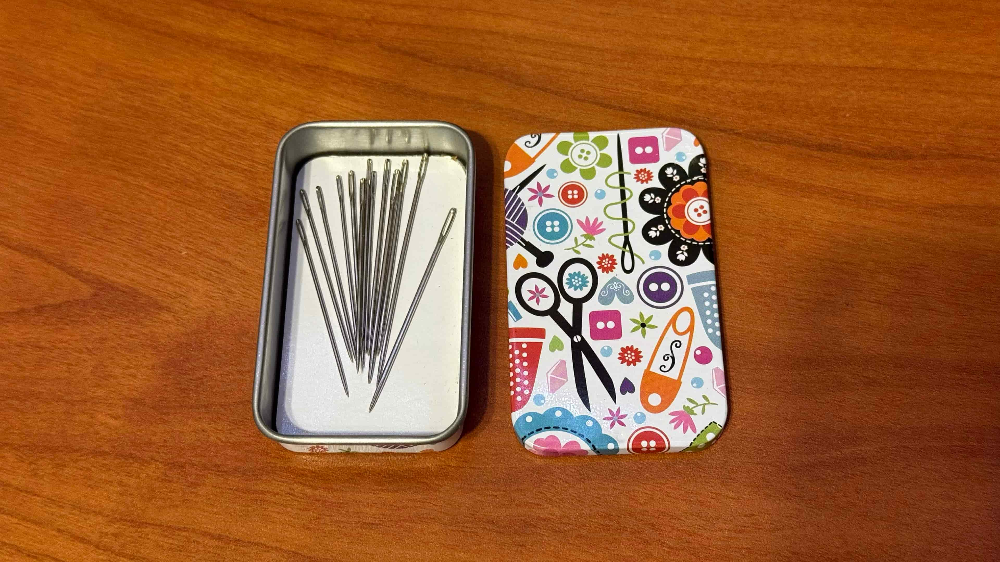
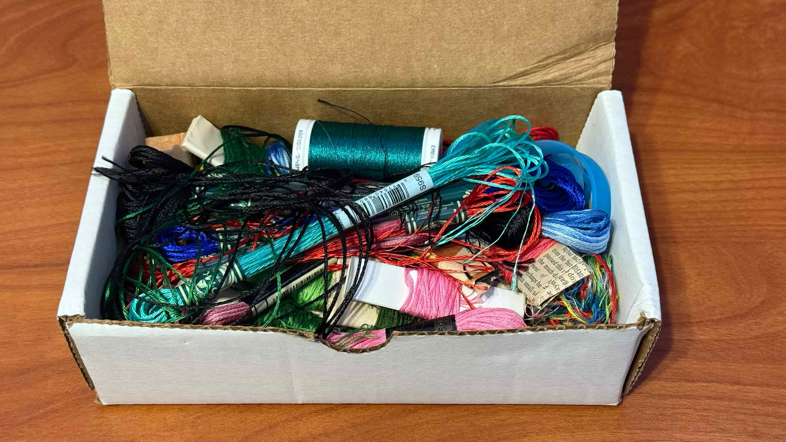
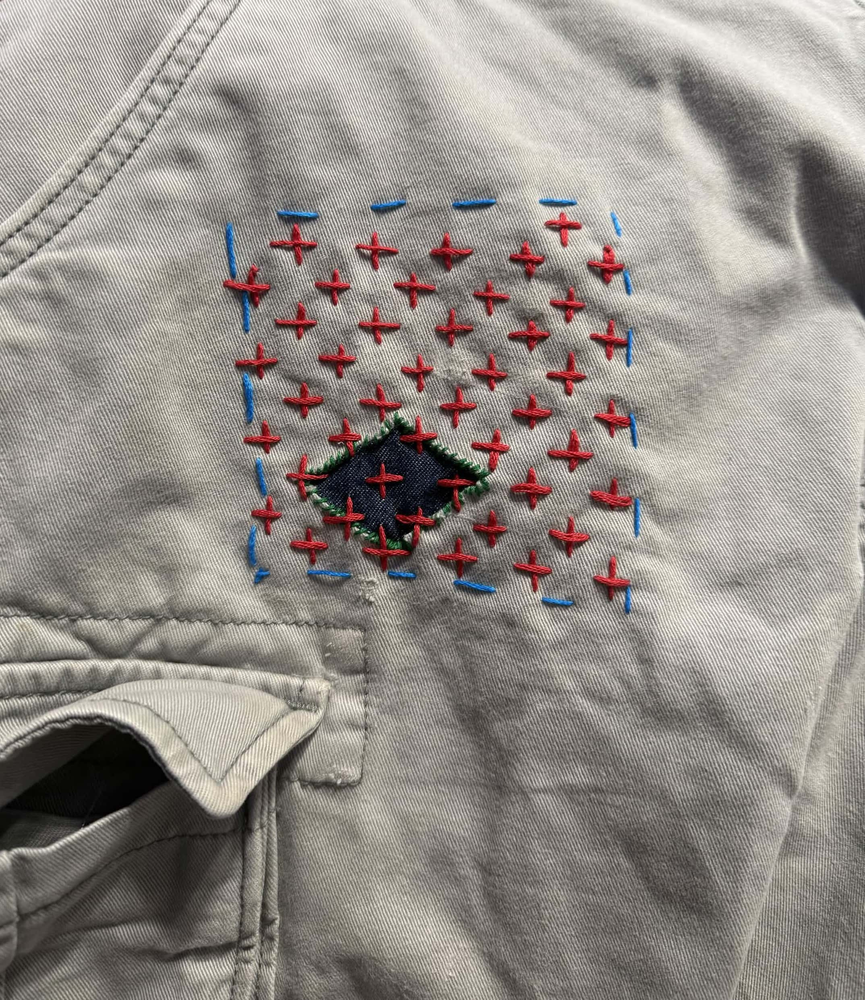
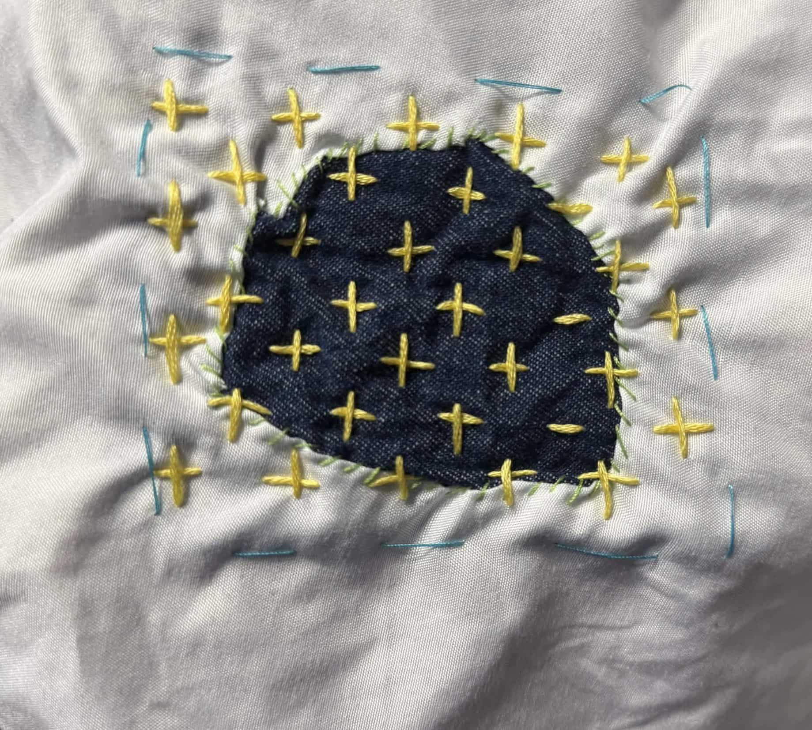
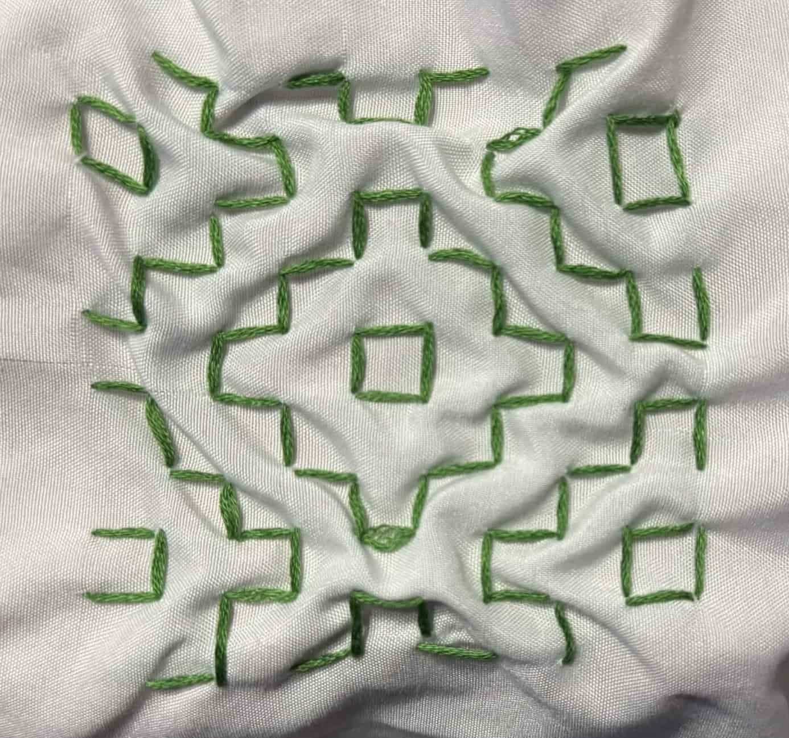
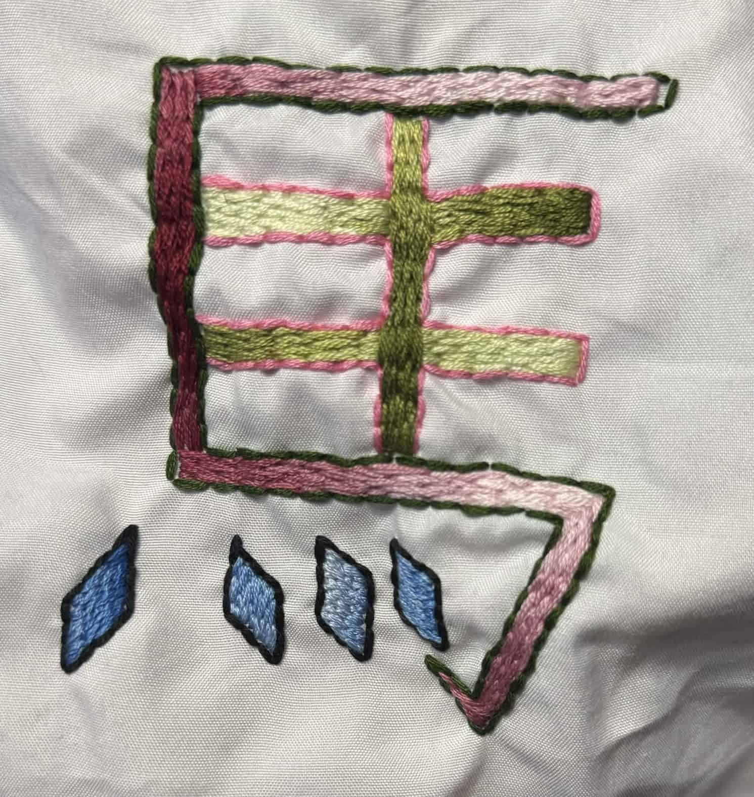
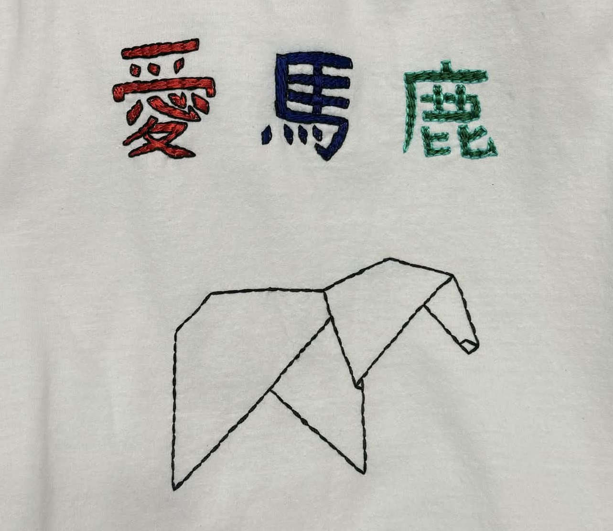

「
刺繡。
」針と糸を使う芸術


二年生の時、自転車から落ちて、ズボンに穴があきました。穴 をふさいで、飾りたいと思いました。「いつか直そう」と決心しました。 この前の春休みに、やっと直しました。その時、初めて刺し子をしました。刺し子で、その同じズボンを恥 ずかしいものから自慢できるものに変えました。



刺し子の練習


1 / 3
白いセーターをもらって、刺繍に興味が出てきたので、「そうだ、この真っ白なキャンバスに絵を描ける！」と思いました。 最初は折り紙部のTシャツのことを考えて、折り紙の絵を刺繍することに決めました。でも、ただ「馬」と書くだけではつまらないと思いました。 もっと意味を込めたかったんです。そこで、「愛馬」という言葉を思い出しました。この言葉を使って、何か面白い意味を込められないかと思いました。 そして、「馬鹿 」という言葉も思い出しました。「両方を使ったらどうだろう？」と思って、少し調べてみると、ほかにも「〇〇馬鹿」という言い方があることに気づきました。こうして、最終的に「愛馬鹿」に決めました。 私は愛についてよく考えるので、自分のことを「愛馬鹿」と呼んでも大げさではないと思います。